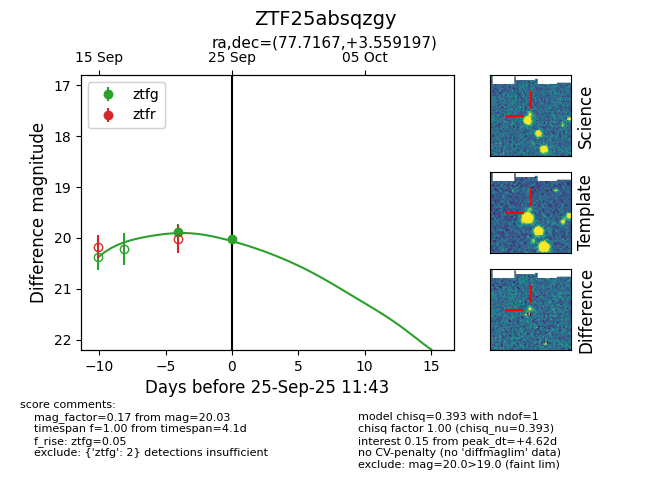
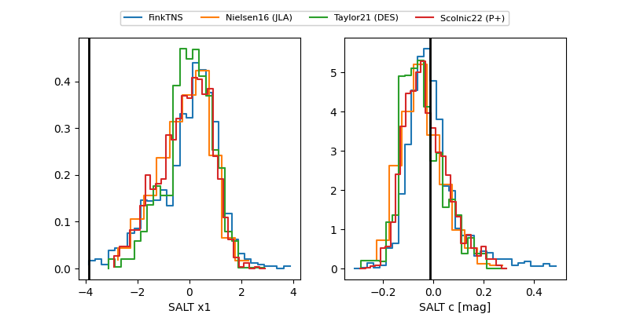

FINK: ZTF25absqzgy
Lasair: ZTF25absqzgy
ALeRCE: ZTF25absqzgy
ZTF25absqzgy (ztf,fink)
equatorial (ra, dec) = (77.7167,+3.55920)
galactic (l, b) = (197.5469,-20.43213)


last ztfg=20.03
2 ztfg detections